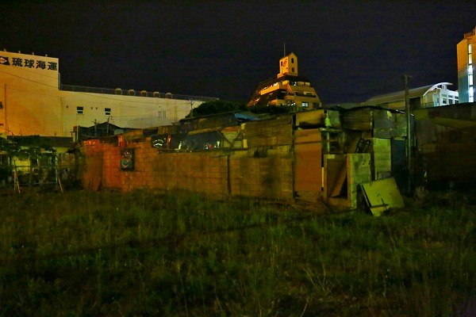
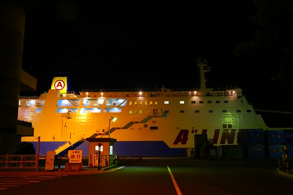
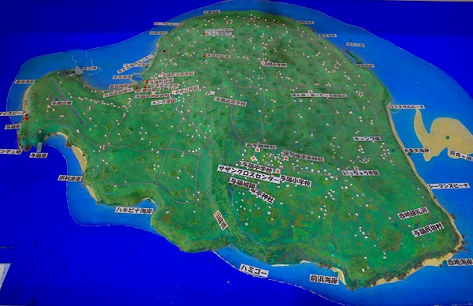
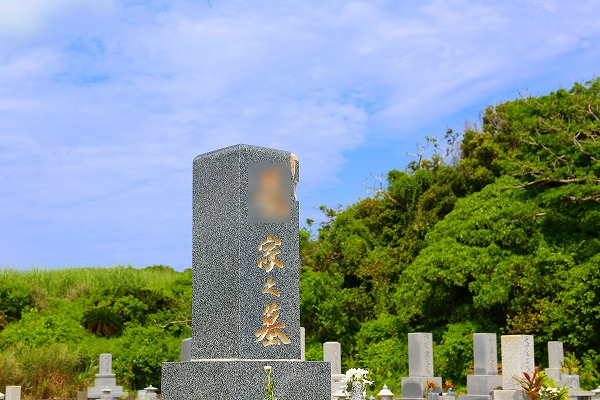
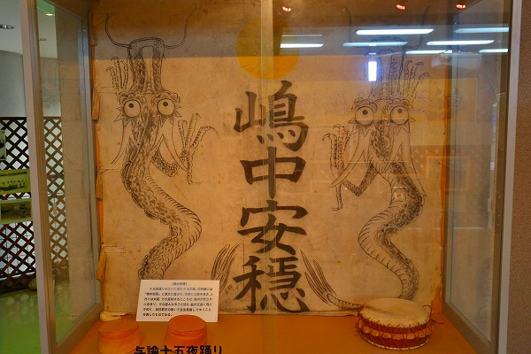
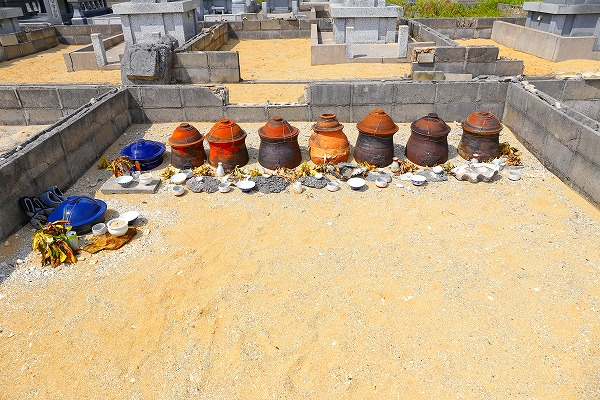
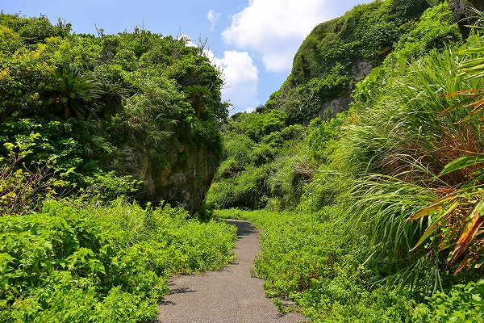
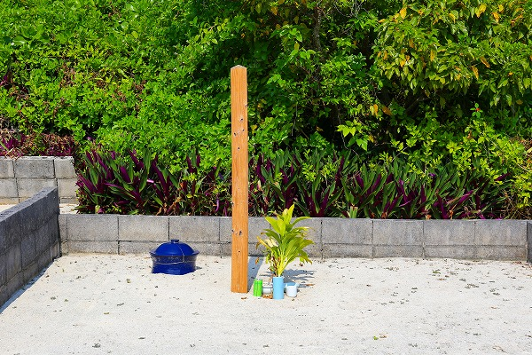
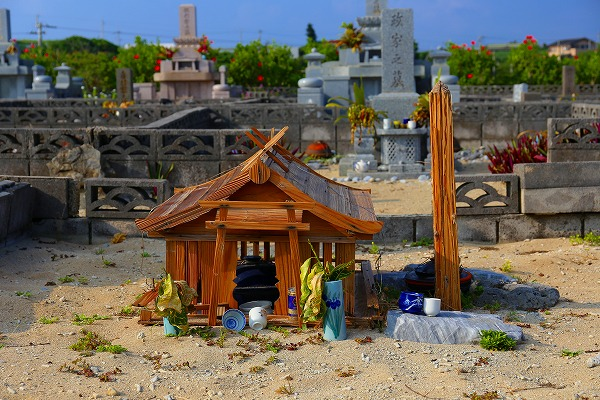

夏である。
与論島である。
鹿児島県の奄美群島最南端の島であり、20数㎞南は沖縄本島の北端、辺戸岬という場所だ。
古いハナシで恐縮だが、私が子供の頃は沖縄が本土復帰を果たす前だったので
与論島は日本の最南端だった。
今思えば近所の大学生のお兄さんとかが夏休み明けに「ヨロン」とか「YORON」とかプリントされたTシャツを着ていて「お兄さん、
外国行ったの？カッキー！」とか勝手に盛り上がっていた記憶がある。
つまりその頃の与論島は
1ドル=360円時代の若者が行ける一番遠い場所だったのだ。
さて、オジサンのぼんやりした昔話から40年。話は2012年にワープします（これまた中途半端な！）。
与論島に行く事にした。理由は追々話すとして。
与論島には諸々スケジュールの関係で東京～那覇の飛行機の最終便に乗り込み、明け方に出航する船で与論島に向かうという作戦で行く事にした。
那覇で出航までの数時間をどうやってやり過ごそうか？
時刻は既に夜の11時。船の出航が早朝なので宿も予約してない。
向かったのは那覇の夜の繁華街、松山。
路上はキャッチに次ぐキャッチ。そして路上で輪になって座ってる地元のヤンキー軍団。
うわ。
歌舞伎町より怖え！
取り敢えず那覇に数件存在する
24時間食堂に転がり込んだ。
ダイナーと食堂の中間っぽい24時間食堂はファミレス程の広さだが、客は泥酔したグループ客数名。
しかもホール係のおばちゃんがワンオペで完全に回せてない。
席は全部客の食い残しが山積みされていて片付ける様子もない。
そんな残飯だらけの店内に唖然としつつ、「一人、いっすか？」と聞くとカウンターの一人分だけを何とか片付けて（いや、隣の席にムリクリ寄せて）「はい、どうぞー」てな塩梅。
結局、周囲の食器は片付けられることはなく
客が来るたびに残飯を端に寄せて座らせるという戦法で乗り切っていた。
凄いぞ、夜の松山24時間食堂。NHKのドキュメント72時間でやって欲しい。
これまで何度も沖縄には来て様々なカルチャーショックを受けたものだが、那覇でこれほどショックだったのは久し振りだった。
その後、うず高く積み上げられた残飯と残飯の間でチャンプルーと泡盛をチビチビと頂きながら
持っていた本を読みつつ数時間を過ごした。
救いのない殺伐とした店内の様子と本の内容があまりにもシンクロしていて不覚にも独りオイオイ泣きながらその本を読んでいた記憶だけが今でも鮮明に残っている。
今、読み返したらそんなに泣くような話ではなかったんだが…。
で、出航の時間が近づいて来たので酔い覚ましがてらぶらぶら歩いて港へ。

港の向いには凄いバラックが建っていた。
このレポートを書いている今、グーグルマップで確認してみたら綺麗さっぱり消滅していた。

振り返れば既に港には船が入港しているではないか。
港の売店では沖縄の土産や泡盛などが売られている。
ちなみに多分今でもそうなんだと思うが、沖縄から本土に渡る際は洋酒や香水などは地域振興策の一環として税金が免除されている筈である。
違ってたらすみません。
なので本島より数十キロしか離れていない与論島に行く際も洋酒などは若干安く買える…と思ったけどこれも昔の話なので各自確認してください。
そんなわけで船に乗り込み、軽くひと眠りしたら、もうそこは与論島であった。
はい。前説が長くてスミマセン。
やっと与論島に到着しました。

与論島は人口5000人の小さな島で
主産業は農業と観光業。

しかし先に述べた1970年代の離島ブームの勢いは無く、最盛期の1/3程度に観光客は減少しているという。
実際、島に観光で訪れているのはリゾート客がほとんどだ。
観光客が押し寄せる
百合ヶ浜という干潮にだけ現れるビーチ以外はこれといって観光地はない。
そんな島に来た理由、それは
この島の墓が気になっていたからなのだ。
島の周囲は約20ｋｍ。
その海岸沿いに墓地が点在している。
最初に訪れたのは島の南東部の墓地。
目の前は綺麗なビーチだった。
ちなみに今回与論島の墓地を紹介するにあたり、
詳しい所在は伏せさせていただく。
理由は後に述べることにする。
一見、ごく普通の墓地に見える。
これまでも鹿児島本土や屋久島などの墓地を見てきたが、その辺りと同じような形式の墓が並んでいる。

墓石の端が欠けていてよく見ると石塔が石材ではなく人造石で出来ている。
これもまた南方の離島ではよく見るケースで、石材が入手しにくいので
人造石で墓石を建立するのである。
こちらは
琉球風の家形の墓地。
すぐ目の前が沖縄だし、かつては琉球王国の影響下にあった土地であるからこのような墓があってもなんら不思議ではない。
ところが墓地をぶらついていると不思議な光景が目につく。
墓地の中に少なからず
甕のようなものが埋められているのだ。
恐らく
遺骨が納められた甕なのだろう。
それにしても何故このような半分埋まった中途半端な状態で甕が置かれているのだろう？
ひょっとして、お盆になるとこの甕の蓋が空いて、中から…なんてことはないですよね…
墓はすべて海の方を向いている。
その向こうには穏やかな海岸が広がり、その向こうには沖縄本島の北端がうっすら見えている。
それにしても不思議な眺めだ。
これまでも沖縄本島や八重山諸島、鹿児島本土、屋久島などの墓を訪れてきたが、このようなお墓は他では見たことがない。
まあ、この墓の存在を知ったからこそわざわざ与論島に来たんですけどね。
もう少しこの不思議な形状の墓を詳しく観察してみよう。
墓地はブロックで囲われており、各家の墓域は明確に分かれている。
甕は素焼きの物が多いが、青い甕もある。
こちらは少し新しい物と推測できる。
甕の多くは蓋が針金で固定されている。
また、甕の前にはテーブルサンゴの平板が置かれており、香炉や茶碗や花瓶などが置かれている。
新しい砂が敷かれている墓もあった。
つまりこれは古い葬制ではなく、現在進行型の墓制なのだ。
ふと、墓地の奥を見ると、崖のようなところに
岩窟墓のようなものが見えた。
熱帯の植物に半分覆われたような場所にそれは確かにあった。
岸壁の岩陰を塞ぐような墓があった。
これは風葬墓の一種だろう。
よく見てみたら周囲にはたくさんの「扉」があった。
後に知ることになるが、奄美大島から与論島までの奄美群島では元々このような岩壁にある洞窟のような場所に遺骨を安置していたという。
一見判りにくいが、ここも岩陰を石とセメントで塞いだ形状の墓である。
こちらはブロックとセメントで塞いである。
こちらは金属製の扉で塞いである。
扉には鍵が付いていて簡単に開かないようにしてある。
こちらは石とセメントで塞いである。
埋葬の際は中央の石で塞いである部分を開けて埋葬するのだろう。
海に面したオープンな墓地に対して、クローズな雰囲気の墓であった。
この違いは何なんだろう？
「崖の墓地」から現代の墓地を眺める。
この場所からも海岸は眺められる。
死者は海を眺められる場所に埋葬するのが基本姿勢なのだろうか。
再び海沿いの墓地に戻る。
やはり先程の岩陰の墓に比べて目の前にビーチがあり、開放的な雰囲気だ。
岩陰の墓と甕の墓、そして現代風の石塔墓、その3者にどんな違いがあるのだろうか？
ここから数日間、この与論島の不思議な墓制を訪ねつつ、相も変わらず誰にも頼まれてもいないのに
何故このような埋葬形式が産まれたのかを探る旅を勝手にはじめることになるのだ。
近くにあった墓地。
ここにも甕が半分埋まっていた。
銀のシートが被せられていたり、テーブルサンゴが乗せられていたり、甕にはそれなりの敬意が示されている。
トタンの板が被せられている。
これは土葬（寝棺）の痕跡だろうか？
墓石の後にある丸いサークルはかつては甕が埋まっていた痕跡だろうか。
墓石の前には靴と杖が置かれていた。
恐らく故人の使用していたモノなのだろう。
さて。
与論島でステイしていたのは島の東南部。
いわば島の中でも更にローカルな場所で、周辺にはローカルなよろづ屋っぽいスーパーが一軒、さらに数十分歩くと比較的大きなスーパーがもう一軒。
それ以外は特に何もない所にステイしていた。
理由は
お墓がたくさんあるから。
そのエリアで唯一観光地らしきものがここ、
与論民俗村だった。
ここは昔の与論の民家や民具を展示している。

これは昔のサトウキビを絞る機械。
牛に牽かせて汁を抽出し、黒糖を作っていた。
ここを運営している方がこの島の民俗に精通している方で、この島の葬制や墓制について色々教えてもらった。
曰く、ここ与論島は琉球王朝の影響下にあり、琉球の葬制が色濃く残っている地域だった。
琉球の伝統的な葬制とは
風葬→洗骨→改葬、というプロセスだ。
これは遺体を一旦、岩陰や墓所に安置し、その数年後に改めて遺体に付いた肉などを洗って落として骨だけにする。
清められた骨は改めて骨壺（焼骨ではないので大きな甕のような陶器の容器）に納められ、再び墓地に納められるのだ。
つまり
死者は二度埋葬されるのだ。
沖縄でも随分少なくなったというが、かつて洗骨を体験したという女性に会った事は一度や二度ではない。
しかも沖縄の離島に行くとつい最近までやっていた的な話を聞くので決してむか～しむかしありました、という話ではないようだ。
さて。
与論島の話に戻る。
沖縄本島のすぐ近くで、琉球王国の影響下にあった与論島でも改葬が行われていた。
先程見た岩陰の墓、それが風葬墓地で、地元では
ジシと呼んでいる。
そして琉球同様、
風葬→洗骨→改葬というプロセスを経ていた。

ところが、ここ与論島は琉球王朝の文化習俗の影響を受けながらも
鹿児島県に属している。
明治初期、鹿児島県下の奄美群島では衛生上の観点から風葬を禁止する風潮が強まって、
明治11年の風葬禁止令となる。
さらに明治35年、島を訪れた鹿児島の役人が視察した結果、全島の風葬を改めて禁止しただけでなく、
ジシの使用も禁止されてしまう。
ここで、
与論と沖縄の墓制が決定的に分かれる事になる。
沖縄では今まで通り、風葬→洗骨→改葬のプロセスを踏襲していたが、与論では風葬もジシも禁止されてしまったのだ。
そこで人々は新たな葬法を考える。
それが
土葬～洗骨～改葬という方法だ。
先程の墓を思い出していただく。

四角く区画された墓地の後方に半分埋まった甕が並んでいる。
これは洗骨が終わった白骨が納められていると考えて間違いない。
つまり、風葬を禁じられたこの島の人々は一旦墓地内の手前の砂の部分に遺体を土葬する。
その後、しかるべき時期を経たのちにその遺体を掘り起こし洗骨をして甕に納め、ジシが使えないので墓地内に半分埋めた状態で並べたのだろう。
そう考えるとこの島の墓地が海沿いに集中しているのも納得できる。
海沿いの砂であれば土葬した遺体を掘り起こすのに楽だから。
かように与論の土葬は
基本的に掘り起こされる前提で埋葬されたのだろう。
サザンクロスセンターという展望台兼資料館にあった葬儀の風景。
昭和中期辺りだろうか。
野辺送りの様子が写されている。
お城のような龕（棺桶を覆うもの）の形状を見る限り座棺のようだ。
そのサザンクロスセンターのすぐ近くにある地主神社。
葬儀に参列した人や家族、お産の夫婦は一定期間参拝出来ないとある。
島の最高峰にあり、かつては与論城という城があった場所だ。
拝殿内には1960年代の与論の祭りや生活の写真が飾られていた。
そんな与論城址の中にも墓があると聞いていたので探してみる。
城跡とはいえ一歩メインルートを外れるとジャングル状態だ。
本島にあるのかな～、と周囲をウロウロしているとそれらしき場所があった。
岩壁に設けられたジシである。
場所柄、有力者のジシかもしれない。
さて、更に島をぶらぶらしてみる。
道沿いの何てことのない小山だが、よく見ると階段が付いている。
段々勘が効いてきた私、はは～ん、これもジシだな、と思い上ってみる。
上ってみるとやはり
洗骨された骨が安置されていた。
甕ではなくポリバケツに納められていた。
つまりジシは
少なくとも甕の代用品としてポリバケツを使うほどの近年まで、機能していた、ということだ。
地元の人もほぼ使わないであろう狭い道を進む。

その先にも崖があり、
岩壁にジシがあった。
このジシは岩陰を石とモルタルで三角に塞いである。
ジシへの入口はテーブルサンゴが使われているようだ。
入口は相当小さい。
大人でも小柄な人が這ってやっと入れるか入れないかという感じ。
ジシの前には甕が2つ埋まっていた。
もちろんコレは埋葬後に洗骨して改葬したものだ。
ジシを使用しなくなっても先祖の墓の近くに納めた方がよかろう、という判断なのだろうか？
それともこの形式の甕に納めてしまうとジシの入口が狭くて中に入らないからジシの手前に埋めたのだろうか。
傍らには杖と草履が置かれていた。
あの世へ旅立つためのアイテムなのか単に故人が使っていたものなのか。
海の近くにある火葬場。
出来たのは
2003年。かなり最近だ。
当然、この火葬場が出来る前までこの島は土葬であった。つまり少なくとも今世紀初頭までは先に述べた葬法は存続していたし、今でも存続している可能性はある、と思う。
そこには
洗骨に対する与論の人々の強い思い入れが感じられる。
島で洗骨を経験した人達に話を聞いた。
それによると洗骨の際は遺骨が陽に当たらないように日傘をさし続けて作業をするという。
焼酎で拭いて骨を綺麗にして甕に納める。
その時は「お婆さん、久し振りだねー」などと声をかけながら行ったという。
正直チョットエグいなあと思っていたがが、遺族にしてみれば
とても感動したので、やってよかったという。
ちなみに沖縄では洗骨は女性だけがやるものとされていて、それは主にお嫁さんの仕事だったという。
以前沖縄で洗骨をしたことがあるという女性に話を聞いたときは、
それはそれはイヤだったという。
聞けば大嫌いな姑の洗骨だったという。
そう言えば沖縄ではかなり早い段階で火葬場が建設されている。
一説には洗骨があまりにも辛いので女性が中心となって火葬場建設運動が進んだという話を聞いたことがある。
与論では男女とも洗骨に参加するし、私が会った方々は概ねポジティブな印象しかなかった事を記しておく。
さてさらに島内をウロウロ
人目につかないような場所にあるジシ。
数日、墓めぐりをしていると段々ジシがどうかが判ってくる。
岩とシートで隠してはいるが、骨が見える。
以前はもっとあっけらかんと骨が安置（放置？）されていたという。
しかし与論島の観光ブームの頃、本土から来た
ヒッピーが頭蓋骨を盗んで持っていってしまう事件があり、それ以来、島の人も入口を塞いだり、岩で隠したりするようになったとか。
なんとも世知辛いハナシであるが、それゆえ今回紹介した墓も詳しい場所は伏せてあるのだ。ご了解願いたい。
巨大な岩の下にあるジシ。
石とモルタルで部屋のように囲んである。
中を覗くと甕が安置されている。

隣の小部屋には白骨がばらばらに散乱していた。
骨の納め方も時代などで変わっていくようだ。
比較的大規模な墓地。
近代的な石塔墓が多いが、やはり洗骨された甕が並ぶ墓も多数ある。

角塔婆が建っていた。
これは仏教式の墓標。仏教が島に徐々に浸透していっている事を示している。
石塔墓と甕が並んでいるタイプの墓の比率はやや石塔墓の方が多いように見える。
ただ、石塔墓の方が面積が狭い区画が多いので面積比としては五分五分といった印象。
石塔墓は火葬場で焼かれた焼骨を納骨するだけなので墓のスペースとしては小さくて済むのだ。
土葬、洗骨、改葬するタイプの墓に着目しよう。
まとめて埋められた甕を区別するように珊瑚石で仕切りが設けられている。
こちらも珊瑚石で囲まれている。
珊瑚石は墓地のパーツとして多用されている。
これは周辺に珊瑚を並べて装飾的に仕上げてある。
陽が当たらない様に屋根をかけてある。
これもテーブルサンゴだ。
こちらはスレート板のようなものを組み合わせた屋根。
こちらは完全に屋根を組んじゃってます。
そういえば洗骨の際も日傘をさしたり、あくまでも骨を陽に晒さない様にしようとしている。
だったら
何故甕を半分外に出すのだろう？
陽に晒したくないのであれば完全に土中に埋めてしまえばいいのに。
…これは私見だが、根底に
土葬への嫌悪感があるのではなかろうか。
つまり墓に納められた甕を半分地上に露出させることによってあくまでもジシに納められたのと同じ状態にある、ということの表現なのではないだろうか。
この辺はマインド的に少し判りにくいかもしれないが、琉球からフィリピン、インドネシア辺りは近年まで風葬が一般的だった（今も行っている所もある）。
以前インドネシアのトラジャでよく耳にしたのは土葬に対する拒否感だった。
土の中は汚れた世界であり、岩の中が清浄な世界なのだ、という考え方が非常に強かった。
もしかしたらこのようなマインドは
風葬を行ってきた民族に共通する感覚なのではないだろうか。
とすればこの甕半出し方式は鹿児島県から
ジシを禁止され風葬を禁止され土葬を強要された与論の人々の「お上」へのレジスタンスだったのかも知れない。
民族のアイデンティである葬法を勝手に変更されてきても尚、古来のやり方になるべく近い方法を独自に編み出してきた、それが現在の与論の墓制なのではなかろうか。
このような墓は琉球と鹿児島の間に立つ与論だからこそ産まれた光景といえよう。
何故か甕を横にして半埋めしてある墓があった。
コレを見るとやはり埋まっているのは半分～三分の二程度だ。
恐らくこの島でも
急激に火葬率が高くなり、石塔墓が一般的になってくるだろう。
そういう意味では十数年後にはこのような墓はもう見られなくなるかもしれない。
今のうちにたくさん目に焼き付けておこう。
甕の蓋の上に更に金属のボウルを被せてある。
これも先程の屋根の一種なのだろうか。
墓のすぐ裏手はビーチである。
しばし泳いでから宿に帰ることにする。
与論の墓めぐり、最後に島の中心部にある墓を訪れて締めたいと思う。
場所は市街地の海沿い。
ミコノス通りという白塗りの壁面が印象的で与論マラソンのスタート地点でもある。
そんな観光客向けっぽい白壁の内側が墓地になっている事は地元の人以外は知らないと思う。
しかしそこには島最大の墓地が広がっている。
勿論ここにも甕の墓地が多数ある。
石塔型と甕型の混合型。
他の墓地でも見たが、甕と石塔が共存している墓はこの中心街の墓地に多く見られた。
そういえば甕の蓋は針金で縛られているが、この蓋を開けることはあるのだろうか？
「たまに蓋を開けて見ることもあるヨ～」という人もいたがそれがレアケースなのか一般的なのかは良く判らなかった。
囲いの上の部分の透かしブロックが全部壊されていた。
他でも透かしブロックだけ壊してある墓があった。何か意味があるのだろうか？判らん。
独自の形式の甕。
珊瑚や石臼でデコられた墓。
そんな中で他の墓地では見られなかった墓があった。

木で出来た祠のような墓。
これは土葬の墓の上に建てる墓上装置である。
かつては日本本土の全国で見られたが最近は目にすることもほとんどなくなった。
例外的に瀬戸内海の志々島などで見かけることはあるが、他では大変珍しい。
何故、与論島のしかもこの墓地にだけ家形の墓上装置があるのかは謎だが、やはり土葬が今でもリアルに続いている、あるいはその記憶が色濃く残っている為だと思われる。
ちなみに家型の上をアーチのように跨ぐ棒は本土ではイヌハジキといい、本来は竹で出来ている。
犬や獣が遺体を掘ろうとするとイヌハジキが弾けて獣が驚いて逃げ出すように作ったというのが本来の用途だ。
見れば結構何軒かその形跡が見てとれる。
その家形の祠を石材で模したものもあった。
四隅に貼られた針金はイヌハジキを模したものなのか、それとも単に台風で転がらないように固定しているのか、判らんかった。
以上で与論の墓めぐりは終了。
風葬、土葬、火葬、と時代よって変化してきた与論の墓制だが、今後は火葬が主流となり、甕が埋まったような墓は少なくなってくるのだろう。
そう思うと何となく寂しいような気持ちになる。
先にも述べたが、この墓のスタイルは
与論の人々が様々な影響や制約などを受けて独自に進化させたものだ。
それはある意味
琉球と薩摩に翻弄されたこの島の歴史の象徴なのかも知れない。